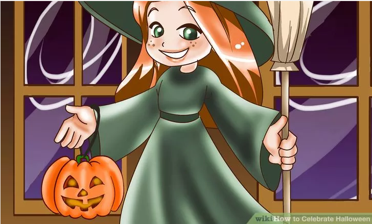
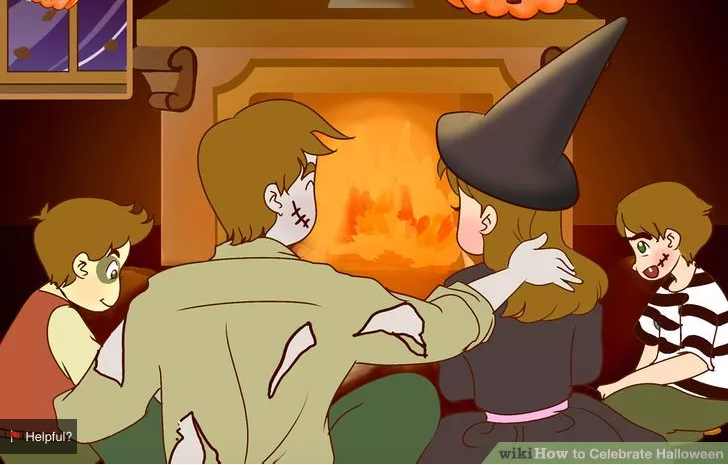
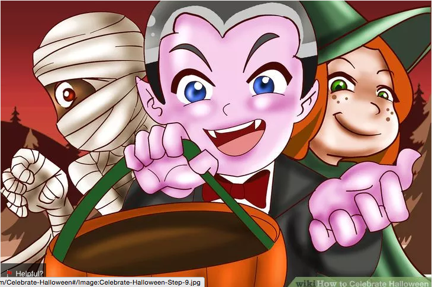
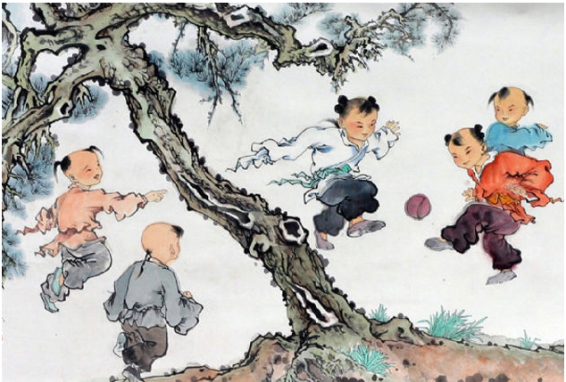
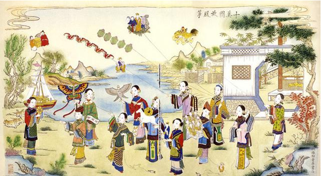

Halloween
Why do we celebarte Halloween?
庆祝万圣节的来临，小孩会装扮成各种可爱的鬼怪向逐家逐户地敲门，要求获得糖果，否则就会捣蛋。
如何庆祝万圣节呢？
First Buy a new costume each year
Buy a new costume each year. Shop around until you find the costume you're looking for -- there are literally hundreds to choose from. If you can't find what you're looking for in your area, try online. Some places will get you your costume in as little as a few days. Remember to ask your parents first!
为庆祝万圣节的来临，小孩会装扮成各种可爱的鬼怪向逐家逐户地敲门，要求获得糖果，否则就会捣蛋。而同时传说这一晚，各种鬼怪也会装扮成小孩混入群众之中一起庆祝万圣节的来临，而人类为了让鬼怪更融洽才装扮成各种鬼怪。
2 Carve a pumpkin.

2 Carve a pumpkin. One of the quintessential American traditions of Halloween is pumpkin carving. Grab mom or dad and go the pumpkin farm or a regular shop to pick out your next pumpkin victim. Do you want to do a spooky face? A friendly face? Maybe not a face at all?
为庆祝万圣节的来临，小孩会装扮成各种可爱的鬼怪向逐家逐户地敲门，要求获得糖果，否则就会捣蛋。而同时传说这一晚，各种鬼怪也会装扮成小孩混入群众之中一起庆祝万圣节的来临，而人类为了让鬼怪更融洽才装扮成各种鬼怪。
3 celebrate with friends.
Celebrate the holiday with friends or family. Halloween does not just have to be trick or treating. A night or two before, get your friends and family together, go bobbing for apples, stick in a scary movie, and load up on the popcorn and salty party foods -- you'll be eating chocolate, chocolate, chocolate for the next two weeks!
为庆祝万圣节的来临，小孩会装扮成各种可爱的鬼怪向逐家逐户地敲门，要求获得糖果，否则就会捣蛋。而同时传说这一晚，各种鬼怪也会装扮成小孩混入群众之中一起庆祝万圣节的来临，而人类为了让鬼怪更融洽才装扮成各种鬼怪。
4 Go trick or treating!
Go trick or treating! Put on your ghoul make-up and join the ghosts and witches saying Trick or Treat! (Smell my feet, give me something good to eat!) But remember only to visit those with porch lights on or those with Halloween decorations. It's usually pretty easy to tell. If they have lights on and decorations up, these are clearly people happy to celebrate (and give you something!) and this is where the Halloween spirit explodes with vitality.
为庆祝万圣节的来临，小孩会装扮成各种可爱的鬼怪向逐家逐户地敲门，要求获得糖果，否则就会捣蛋。而同时传说这一晚，各种鬼怪也会装扮成小孩混入群众之中一起庆祝万圣节的来临，而人类为了让鬼怪更融洽才装扮成各种鬼怪。
Language Tips for Halloween
bat蝙蝠 (Small mouse-like animal that flies at night)
carve雕刻(Cut with a large knife in order to form something, for example a scary face in a pumpkin)
jack-o-lantern 杰克南瓜脸(Scary faces are carved out of pumpkins and candles are placed inside. These are called 'jack-o-lanterns' and are made at Halloween to scare away evil spirits.)
Pumpkin南瓜:(Large round orange-coloured vegetable used at Halloween to make lanterns.)
witch巫婆: (An ugly woman, wearing a black cloak and pointed hat, thought to have evil powers.
What would you be in Halloween
In China we celebrate Qingming Festival
The custom of the qingming festival is richinteresting, in addition to pay attention to the fire, the grave, and outing,swing, a game called cuju, play polo, inserted liu and so on a series ofcustoms sports activities. This is because tomb-sweeping day to people from thefire, in order to prevent a cold buffet injury body, so everyone to take partin some of the sports activities, and to exercise.
因此，这个节日中既有祭扫新坟
Therefore, this festivalboth JiSao new born from the grave don't dead BeiSuan tears, and visit outinglaughter, is a rich characteristic holiday.
清明节的习俗是丰富有趣的，除了讲究禁火、扫墓，还有踏青、荡秋千、蹴鞠、打马球、插柳等一系列风俗体育活动。相传这是因为清明节要寒食禁火，为了防止寒食冷餐伤身，所以大家来参加一些体育活动，以锻炼身体。
因此，这个节日中既有祭扫新坟 生别死离的悲酸泪，又有踏青游玩的欢笑声，是一个富有特色的节日。
But, as a clear festival, and pure solar termand different. Solar term is our country phenology, seasonal change of theorder of symbol, and the festival is contains certain custom of commemoration.
但是，清明作为节日，与纯粹的节气又有所不同。节气是我国物候变化、时令顺序的标志，而节日则包含着一定的风俗活动和某种纪念意义。
Ching Ming festival is a traditionalChinese festival, is also the most important sacrifice holiday, is the day ofworship their ancestors and the grave. The grave commonly known as ShangFen,the sacrifices of the dead an activity. The han nationality and some minorityare mostly in the ching Ming festival the grave.
Language Tips for Qingming Festival
清明节 (qīng-míng jié /ching-ming jyeh/) Qingming Festival
扫墓 (sǎo mǜ /saoww moo/) sweep tombs
祭祖 (jì zǔ /jee dsoo/) worship (sacrifice to) ancestors
纸钱 (zhǐ qián /jrr chyen/) joss paper: paper made to resemble money and burned as an offering to the dead
烧香 (shāo xiāng /shaoww sshyang/) burn joss sticks (incense)